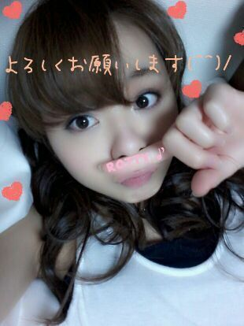

| 2013/04 22 Mon | 〜６thシングル選抜発表の 結果〜 |
やあ(・∨・)ノ ろってぃ−♪だよん!
昨日の晩, 「乃木坂ってどこ?」で
6thの選抜発表がオンエアされました.
6th... アンダーです.
本当のことを言うと
今回 私は 今まで以上に悔しかった.
5thでは ほとんどメディアに
出させてもらえるきかいがなく
握手会,もしくわ blogでしか
ファンの皆さんと
コミュニケーション,
自分を見てもらえるきかいが
なかった.
頑張ってるのは皆...
だからこのまま普通に
皆と同じ様に頑張っていたら
ダメだ.と思い
自分なりに色々勉強して
頑張っていました.
自ら 「 私頑張ってる!
やる気いっぱいです!
私こんなことやってます! 」
とか言わずに
そんなこと言わなくても
なんか頑張ってることが
自然とすごく伝わってくるよ!と
思ってもらえる様になりたい.と
思いました.
それで, 今の自分に足りないことを
勉強していこうと思って
努力しました.
その結果 その部分を
回りの人に fanの皆さんだったり
家族,友達に
本当最近 握手会等で
「なんか知らない間に
ろってぃ−ちょっと成長したね♪」って
言ってもらえて 本当に嬉しかった.
少しずつ少しずつ
ちゃんと結果を出して行きたい(^^)
...だけどやっぱまだ
選抜に入ることはなかった..
悔しくて悔してたまりませんでした。
でも 分かっています!
まだ 十分な努力が足りていないこと!
やり続けなきゃっ♪!
６枚目から もっともっと
色々頑張ります.
私 変わっていきたい!
乃木坂46のメンバーの１人として
川村真洋と言う１人の人間として
見て頂きたいです.
握手会...
私のレーンに来たことがない方
たっくさんいると思います.
一度でいいから
会いにきてほしいです!
もっとたくさんの方と
握手がしたいです .
皆さん,,
こんな私ですが、
どーかこれからも
よろしくお願いします ! !
そして...
ぴょん♪
昨日の京都 個別握手会。
私服はこんな感じRottyだったよ(^^)/

こんな感じRottyって何やねん /
どんな感じやねんなあ.
あっ! 皆さん どうですかねぇ??
あっ ここからヒソヒソ話な^^
あんなっ スタッフさん♪になっ
握手会始まる前...
ス)「まひろ...
こんな真っ白でピタッとした
パンツが履けるのはなかなかや. 」
ま)「え?」
ス)「ぃゃ,, そんな白いの
似合うのは足がスラッとしてないとはけないよ...。」
あれっ? あれれ ♪?
もしかして今さあ
まひろ 褒められたんとちゃうw 笑?
うわあ〜〜
嬉しぴーぽーやわぁ〜^ ^
そうだよそうだよっ! !
ダイエットも頑張らなきゃ
いけないんだよねっ(*´∨`*)
今年は大変だぜぜぜぇ(´ω`)
ぜえ ぜえ ぜえ...(・・;)汗. 笑
頑張りますねん♪
皆さん...

ろってぃ−より♪のし./
コメント(312)
2013/04/22 12:18